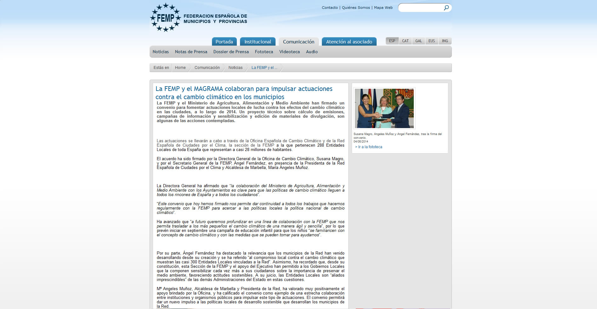

	
		
<div style="margin-top:50px;">
	<div class="container-fluid">
	
		<div class="col-xs-12 col-sm-2 col-md-2 col-lg-2">
			<h2 id="project-title">FEMP</h2>
			<p id="project-client">Página institucional de la Federación Española de Municipios y Provincias</p>
			<p id="project-tags">eBD, jQuery, CSS</p>
		</div>
		<div class="col-xs-12 col-sm-3 col-md-3 col-lg-3">
		
			<p>Página institucional e informativa de la FEMP. Se ha usado la plataforma de desarrollo web eBD.</p>
		</div>
		<div class="col-xs-12 col-sm-7 col-md-7 col-lg-7">
				<div class="thumbnail"></div>
		</div>
	</div>
</div>

